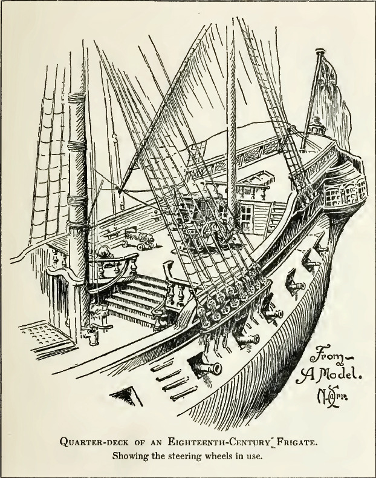
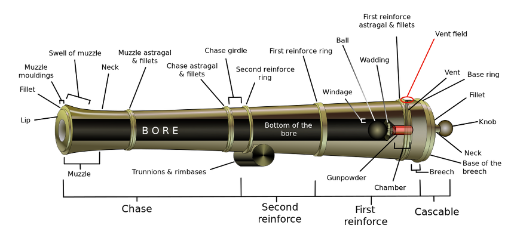
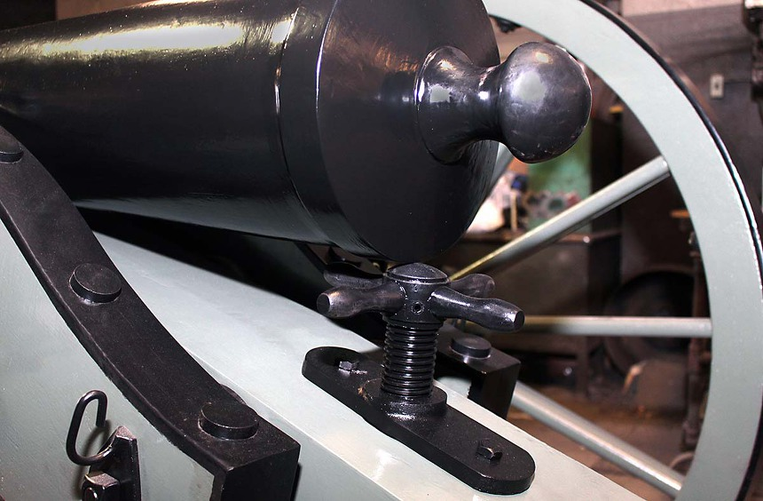

나폴레옹 시대 영국 전함의 전투 광경 - Lieutenant Hornblower 중에서 (3)
게시: 2019-03-04T06:30:00+09:00
포문을 열고 나니 소음이 그렇게 크게 느껴지지 않았다. 수병들은 몸무게를 실어 견인줄을 당기자 포가가 우르르 소르를 내며 굴러가 포구를 함체 밖으로 내밀었다. 부시는 가장 가까운 함포로 걸어가 허리를 굽혀 열린 포문을 통해 밖을 내다 보았다. 저 멀리 대포가 간신히 닿을까말까 한 거리에 섬의 초록빛 언덕들이 보였다. 이 곳의 절벽은 그렇게까지 경사가 급하지는 않았고, 그 발치에는 정글로 덮힌 평지가 있었다.
"배를 돌려라 ! (Hands wear ship ! : wear ship이란 바람 방향에서 벗어나도록 배를 돌린다는 뜻입니다. : 역주)

(Quarterdeck은 위 그림에서 뒤에서 두번째 층의 갑판을 뜻합니다. 거기에 조타륜이 있습니다. 맨 뒤에 더 높은 갑판이 있는데, 그건 poopdeck이라고 합니다. 영미권 사람들은 확실히 해양민족이라서 그런지 이런 해양 용어가 언어에 많이 녹아 있는데 우리나라 말로는 직접적인 번역이 쉽지 않네요.)
부시는 선미갑판(quarterdeck : 배 뒤쪽의 높은 갑판으로서 함장 등 주요 고위 장교들과 조타수가 이 갑판에 있습니다. : 역주)에서 소리지르는 로버츠의 목소리를 알아들었다. 그의 발 밑의 갑판이 수평으로 안정화되자, 저 먼 언덕들이 배와 함께 흔들리는 것처럼 보였다. 수평활대(yard)들이 돌아가면서 돛대들이 끼익끼익 소리를 냈다. 그들이 끼고 돌고 있는 것은 사마냐 지점(Samana Point)이 확실했다. 전함의 움직임이 단순한 항로 변경의 결과보다는 훨씬 더 심하게 변했다. 배가 안정적으로 가고 있을 뿐만 아니라 아주 잔잔한 바다에 들어와 만 안쪽으로 미끄러지듯 들어가고 있었다. 부시는 함포 포구 옆에 아예 쭈그리고 앉아 포문 틈으로 해안을 엿보았다. 그가 보고 있는 곳은 반도의 남쪽 사면으로서, 만을 향하고 있는 해안선이 바다 쪽의 사면만큼이나 가파르다는 것을 알 수 있었다. 꼭대기에 요새가 있었고 스페인 국기가 그 위에 펄럭이고 있었다. 흥분한 사관생도가 다람쥐처럼 사다리를 종종거리며 내려왔다.
"부관님 ! 부관님 ! 함포 시야에 적 포대가 들어오는 대로 그 쪽으로 사거리 측정용 사격(a ranging shot)을 한번 해주시겠습니까 ?"
부시는 그 생도에게 차가운 시선을 던졌다.
"누구의 명령이지 ?" 그가 물었다.
"미... 미스터 버클랜드입니다, 부관님."
"그러면 그렇다고 말을 하게. 알았네. 미스터 버클랜드에게 전갈드리게(My respects to Mr Buckland) 내 함포들이 사거리에 들어가려면 아직 한참 남았다고 말이야."
"예, 부관님."
요새에서는 연기가 피어오르고 있었는데, 화약연기도 아니었다. 부시는 그것이 가열탄(heating shot)을 위한 화로로부터 나오는 연기임을 깨닫고 걱정의 몸서리 같은 것을 느꼈다. 이제 곧 저 요새에서 그들에게 뻘겋게 달궈진 쇳덩어리 대포알을 퍼부을 것인데, 부시에게는 그에 대응 사격할 방법이 없었다. 그는 요새에 닿을 정도로 함포를 높이 조준할 방법이 없었지만, 저 꼭대기의 내려다보는 곳에 위치한 요새에서는 전함에 매우 쉽게 포탄을 날릴 수 있었다. 그는 몸을 바르게 세우고는, 비슷한 태도로 대포 옆에서 밖을 내다보고 있는 혼블로워가 있는 좌현으로 걸어갔다.
"여기 밖으로 튀어나온 지점이 있군요." 혼블로워가 말했다. "저기 얕은 곳이 보이나요 ? 이 물길은 저 얕은 곳을 돌아서 굽어 있는 것이 확실합니다. 그리고 저 지점에 포대에 있네요 ? 저 연기를 보십시요. 가열탄을 준비하고 있는 겁니다."
"그런 것 같군." 부시가 말했다.
곧 그들은 매서운 십자포화 속에 들어갈 것이었다. 그는 자신들이 그 십자포화 속에 너무 오래 있지 않기를 바랬다. 그에게 상갑판에서 외쳐대는 명령들이 들려왔는데, 곧 가로활대가 돛대를 끼고 돌면서 나는 끼익끼익 소리가 났다. 리나운 호가 굽은 수로를 돌고 있는 것이었다.
"요새에서 발포했습니다, 부관님." 우현의 함수포(the forward guns)를 책임지고 있는 보조 항법사(the master's mate)가 보고했다.
"알겠네, 미스터 퍼비스." (Very well, Mr Purvis. Very well은 좋다는 뜻이 아니라 잘 알겠다는 뜻입니다. : 역주) 그는 우현으로 건너가 밖을 내다 보았다. "포탄이 어디에 떨어졌는지 봤나 ?"
"아니요, 부관님."
"이쪽에서도 발포하고 있습니다, 부관님." 혼블로워가 보고했다.
"알겠네."
부시의 눈에도 요새가 하얀 포연을 푹 내뿜는 것이 들어왔다. 그러더니 요새와 그의 눈 사이에 직선으로 전함으로부터 50야드(즉 45m : 역주) 떨어진 지점에 황금빛 바닷물 표면에 물기둥이 솟아올랐다. 그와 거의 동시에 부시의 머리 바로 위 전함의 측면에 뭔가가 우지끈하는 충격과 함께 뚫고 들어왔다. 포탄이 바닷물 위에서 튕긴 뒤 18인치(약 46cm : 역주) 두께의 떡갈나무 목판으로 된 전함의 측면 어딘가에 날아와 박힌 것이다. 잇달아 손가락으로 재빨리 두들기는 듯한 충격들이 뒤따랐다. (Then followed a devil's tattoo of crashes : 여기서 devil's tattoo 라는 것은 손가락 등으로 초조하게 빨리 뭔가를 두들기는 동작을 뜻합니다 : 역주) 아주 잘 조준이 된 일제 사격이 명중하고 있는 것이었다.
"이제 이쪽에서는 저 포대에 닿을 수 있을 것 같습니다, 부관님." 혼블로워가 말했다.
"그러면 어디 한번 해보게."
이제 버클랜드가 햇치 통로에서 직접 나타나 초조하게 외쳤다.
"아직 발포할 각도가 나오지 않는가, 미스터 부시 ?"
"이제 곧 됩니다, 함장님." (This minute, sir.)
혼블로워는 중앙의 24파운드 포 옆에 서있었다. 함포장(gun captain)은 포가(gun carriage) 밑에 굴리는 지렛대(the rolling handspike)를 밀어넣고는 그의 몸무게를 실어 힘껏 들어올렸다. 포구가 목표물을 향하도록 대포의 양쪽 측면 견인줄(side tackle)을 잡고 있던 수병들이 그의 지시에 따라 줄을 당겨 조준을 했다. (당시 함포도 이런 식으로 약간의 좌우 조준이 가능헀습니다 : 역주) 앙각 조절 나사(the elevating coign : 아래 PS1 참조)가 포미(breech)에서 완전히 이탈되어 대포는 가능한 최대 앙각(its highest angle of elevation)으로 올려졌다. 함포장은 점화구(touchhole)에서 무쇠 덮개를 벗겨내고 그 구멍에 화약이 잔뜩 재워진 것을 확인한 뒤, "떨어져(Stand clear)"를 외치며 연기를 뿜는 화승간(linstock)을 거기에 들이댔다. 함포는 그 좁은 공간에서 엄청난 폭음을 냈다. 포연 중 일부가 포문을 통해 배 안으로 밀려들어왔다.

PS1. 당시 대포의 앙각, 즉 포구가 얼마나 위를 향하느냐 하는 각도는 아래 그림과 같은 elevation screw를 이용하여 조절했습니다. 이 두툼한 나사가 대포의 포미, 즉 breech를 떠받치고 있었는데, 이 나사를 최대한 풀면 breech는 나사의 떠받침에서 아예 벗어나 포가 위에 얹히게 됩니다. 그때의 앙각이 그 대포의 최대 앙각이었습니다. 당시 대포, 즉 cannon은 직사화기라서 앙각을 크게 할 경우가 그렇게 많지는 않았고, 이렇게 조절 가능한 앙각도 그다지 크지는 않았습니다.

source : https://en.wikipedia.org/wiki/Cannon
http://www.clarksvilleonline.com/2017/05/11/clarksville-foundry-casts-replica-cannon-clarksville-rotarys-100th-anniversary/clarksville-foundry-cannon-4/